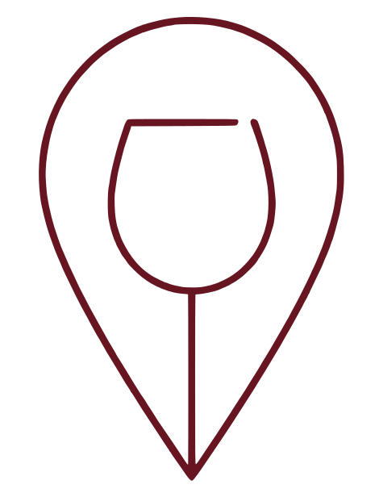
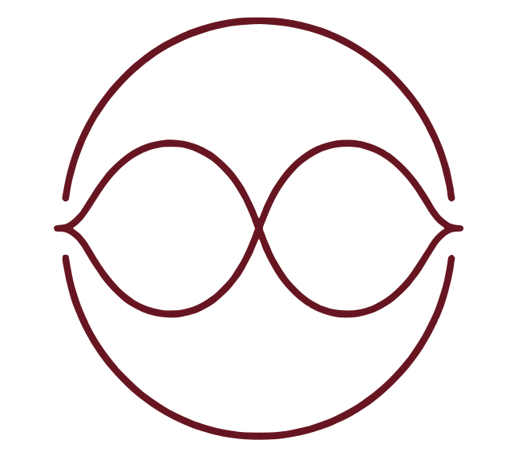
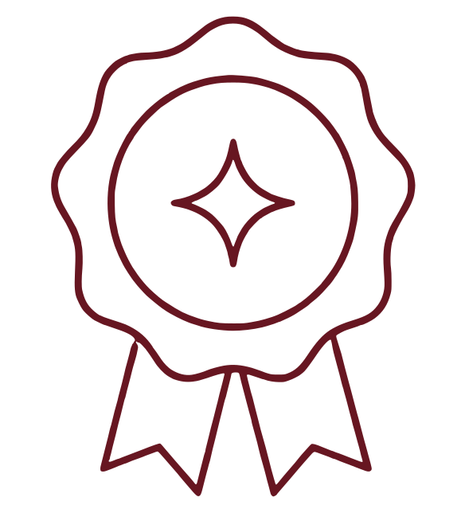

Персональна консультація
Знайдемо сир і вино до вашого смаку та нагоди.
· онлайн
Обрати форматСир і вино · Гурман-Інфо
Підберемо вино до витриманої гауди, пармезану, брі та рокфору.
Відкрийте понад 500 видів крафтових сирів та добірних вин із професійними рекомендаціями щодо поєднання, подачі та гастрономічних поєднань.
Переваги

Враховуємо регіон походження: сир і вино з одного теруару — перевірена гастрономічна традиція, з якої ми починаємо підбір.

Замість спрощеного «червоне до м’яса» — смаковий профіль: текстура, витримка, кислотність. Пояснюємо, чому пара працює.

Регіон, виробник і сертифікація для кожного продукту — без підробок і масмаркету.
Наші послуги
Знайдемо сир і вино до вашого смаку та нагоди.
· онлайн
Обрати форматПроведемо камерну дегустацію для друзів або команди. Познайомимо з локальними сирами та пояснимо, як поєднувати їх із вином.
· від 6 учасників
Обрати форматСтворимо добірку поєднань для вечері, свята або ресторанного меню. Врахуємо ваші страви, бюджет і побажання гостей.
Для вечері, свята або меню
Обрати форматКолекція
Класичні поєднання, з яких сомельє радять починати знайомство з крафтовим сиром. Уся колекція з цінами — на сторінці «Колекція».
Калькулятор порахує вагу кожного сорту, кількість пляшок і вартість — а сомельє допоможе з подачею.